|
Publications
|
| 2020 (doctoral and postdoctoral work) | ||
| 26 |
Synthesis
of Conjugated Triynes via Alkyne Metathesis
I. Curbet, S. Colombel-Rouen, R. Manguin, A. Clermont, A. Quelhas, D. S. Müller, T. Roisnel, O. Baslé, Y. Trolez and M. Mauduit |
|
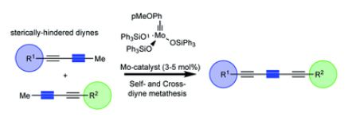 |
||
| 2019 | ||
| 25 |
In
situ generation of Ru-based metathesis catalyst, a systematic study
D.S. Müller, Y. Raoul, J. Le Nôtre, O. Baslé, and M. Mauduit, ACS Catal. 2019, 14, 3511–3518. |
|
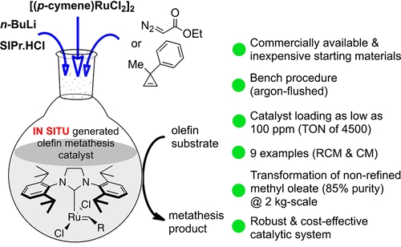 |
||
| 2018 | ||
| 24 |
A
tutorial review of stereoretentive olefin metathesis based on ruthenium
dithiolate catalystsls
D. S. Müller, O. Baslé, and M. Mauduit, Beilstein J. Org. Chem. 2018, 14, 2999–3013 |
|
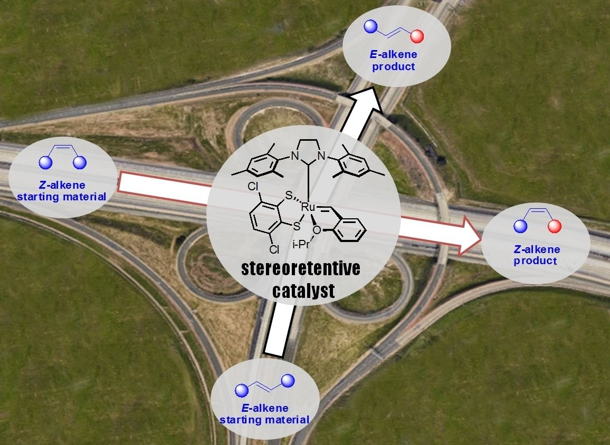 |
||
| 23 |
Stereoretentive
Olefin Metathesis Made Easy: In Situ Generation of Highly Selective
Ruthenium Catalysts from Commercial Starting Materials
D. S. Müller, I. Curbet, Y. Raoul, J. Le Nôtre, O. Baslé, and M. Mauduit, |
|
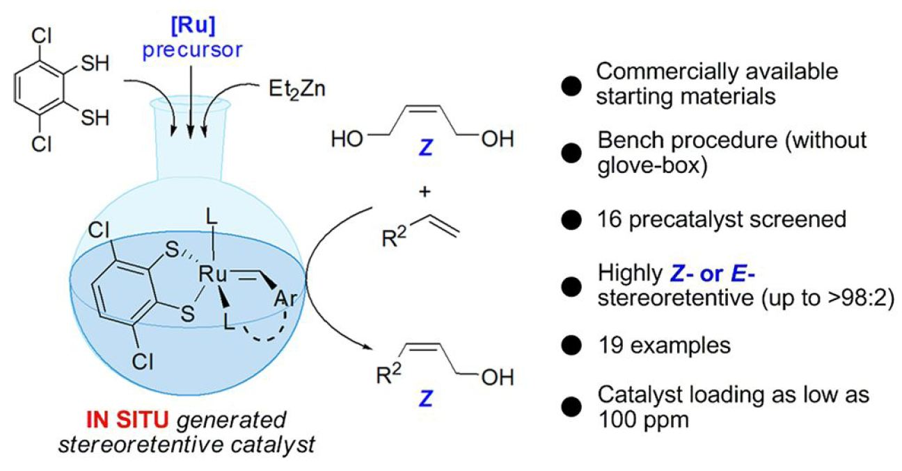 |
||
| 22 |
Synthesis
and Application of Stereoretentive Ruthenium Catalysts on the Basis of
the M7 and the Ru–Benzylidene–Oxazinone Design
A. Dumas, D. S. Müller, I. Curbet, L. Toupet, M. Rouen, O. Baslé, M. Mauduit, |
|
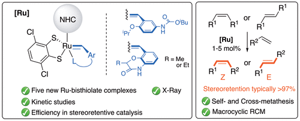 |
||
| 2017 | ||
| 21 |
Tandem
Hydroalumination/Cu-Catalyzed Asymmetric Vinyl Metalation as a New
Access to Enantioenriched Vinylcyclopropane Derivatives
D. S. Müller, V. Werner, S. Akyol, H. G. Schmalz, I. Marek, |
|
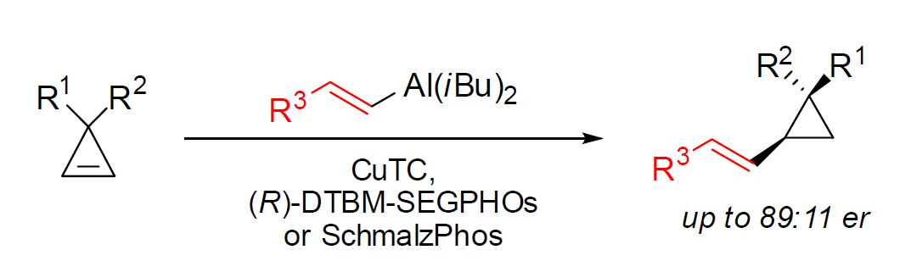 |
||
| 20 |
Asymmetric
Copper-Catalyzed Carbomagnesiation of Cyclopropenes
L. Dian, D. S. Müller, I. Marek |
|
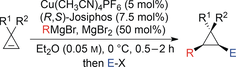 |
||
| 2016 | ||
| 19 |
Short
Enantioselective Total Syntheses of trans-Clerodane Diterpenoids:
Convergent Fragment Coupling Using a trans-Decalin Tertiary Radical
Generated from a Tertiary Alcohol Precursor.
Y.Slutskyy, C. R. Jamison, G. L. Lackner, D. S. Müller, A. P. Dieskau, N. L. Untiedt, L. E. Overman, |
|
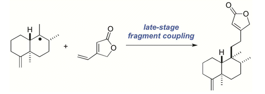 |
||
| 18 | Copper
mediated carbometalation reactions D. S. Müller, I. Marek Chem. Soc. Rev. 2016, 45, 4552-4566. |
|
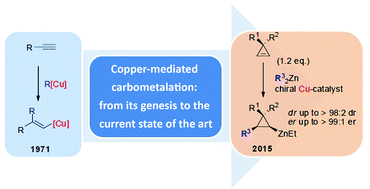 |
||
| 2015 | ||
| 17 |
Asymmetric
Copper-Catalyzed Carbozincation of Cyclopropenes en Route to the
Formation of Diastereo- and Enantiomerically Enriched Polysubstituted
Cyclopropanes
D. S. Müller, I. Marek, |
|
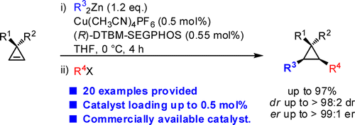 |
||
| 16 |
Constructing
Quaternary Stereogenic Centers Using Tertiary Organocuprates and
Tertiary Radicals. Total Synthesis of trans-Clerodane Natural
Products
D. S. Müller, N. L. Untiedt, A. P. Dieskau, G. L. Lackner, L. E. Overman |
|
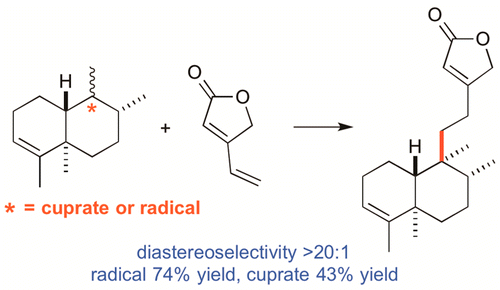 |
||
| 2013 | ||
| 15 |
Copper
catalyzed conjugate addition of
alkenylaluminums to unactivated substrates. D. S.
Müller, PhD thesis (Link).
|
|
| 14 |
Formation
of Quaternary Stereogenic Centers by Copper-Catalyzed
Asymmetric Conjugate Addition Reactions of Alkenylaluminums to
Trisubstituted Enones
D. S. Müller, A. Alexakis |
|
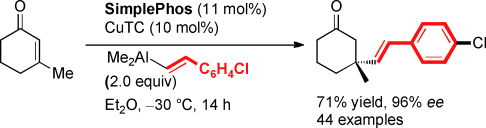 |
||
| 13 |
Practical
Synthesis of SimplePhos Ligands: Further Development of
Alkyl-Substituted Phosphanamines.
D. S. Müller, L. Guénée, A. Alexakis |
|
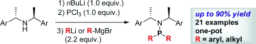 |
||
| 12 |
Direct
Trapping of Sterically Encumbered Aluminum Enolates
C. Bleschke, M. Tissot, D. Müller, A. Alexakis |
|
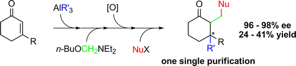 |
||
| 11 |
Creation
of Highly Congested Quaternary Centers via Cu-catalyzed
Conjugate Addition of Alkenyl Alanates to β-Substituted Cyclic
Enones
D. S: Müller, A. Alexakis |
|
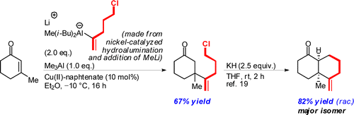 |
||
| 10 |
Copper-Catalyzed
Asymmetric Conjugate Addition of Alkenyl- and
Alkylalanes to α,β-Unsaturated Lactams
P. Cottet, D. S. Müller, A. Alexakis |
|
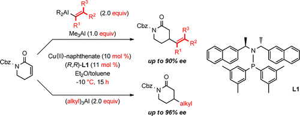 |
||
| 2012 | ||
| 9 |
Copper-Catalyzed
Enantioselective Synthesis of Axially Chiral Allenes.
"H. Li, D. Müller, L. Guénée, A. Alexakis |
|
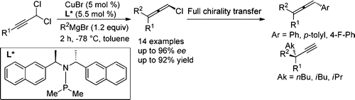 |
||
| 8 |
Rhodium
and Copper-catalyzed asymmetric conjugate addition of alkenyl
nucleophiles.
D. S. Müller, A. Alexakis |
|
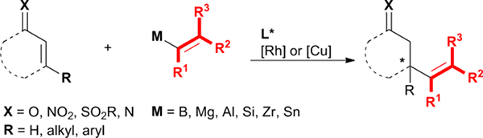 |
||
| 7 |
Formation
of Quaternary Stereogenic Centers by
NHC–Cu-Catalyzed Asymmetric Conjugate Addition Reactions with
Grignard Reagents on Polyconjugated Cyclic Enones
M. Tissot, D. Poggiali, H. Hénon, D. S. Müller, L. Guénée, M. Mauduit, A. Alexakis |
|
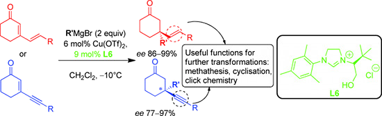 |
||
| 6 |
Copper-Catalyzed
Asymmetric 1,4-Addition of Alkenyl Alanes to N-Substituted-2-3-dehydro-4-piperidones.
D. S. Müller, A. Alexakis |
|
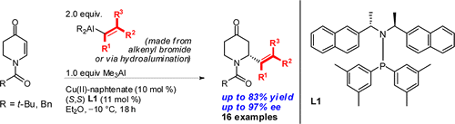 |
||
| 2011 | ||
| 5 |
New
Experimental Conditions for Tandem hydroalumination/Cu-Catalyzed
Asymmetric Conjugate Additions to β-Substituted Cyclic Enones.
D. Müller, M. Tissot, A. Alexakis |
|
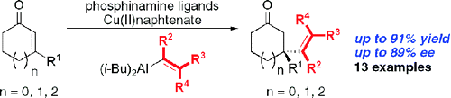 |
||
| 4 |
Highly
Enantioselective and Regioselective Copper-Catalyzed 1,4
Addition of Grignard Reagents to Cyclic Enynones
M. Tissot, A. Pérez Hernández, D. S. Müller, M. Mauduit, A. Alexakis |
|
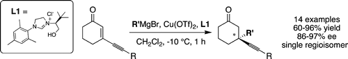 |
||
| 2010 | ||
| 3 |
Rhodium-Catalyzed
Asymmetric 1,4-Addition of Aryl Alanes to
Trisubstituted Enones: Binap as an Effective Ligand in the Formation of
Quaternary Stereocenters.
C. Hawner, D. S. Müller, L. Gremaud, A. Felouat, S. Woodward, A. Alexakis |
|
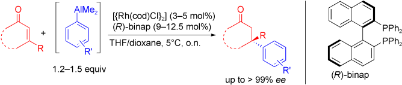 |
||
| 2 |
Creation
of Quaternary Stereogenic Centers via Copper-Catalyzed
Asymmetric Conjugate Addition of Alkenyl Alanes to
α,β-Unsaturated Cyclic Ketones.
D. S. Müller, C. Hawner, M. Tissot, L. Palais, A. Alexakis. |
|
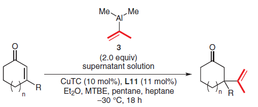 |
||
| 1 |
Enantioselective
and Regiodivergent Copper-Catalyzed Conjugate
Addition of Trialkylaluminium Reagents to Extended Nitro-Michael
Acceptors.
M. Tissot, D. S. Müller, S. Belot, A. Alexakis |
|
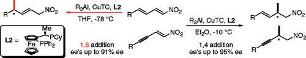 |